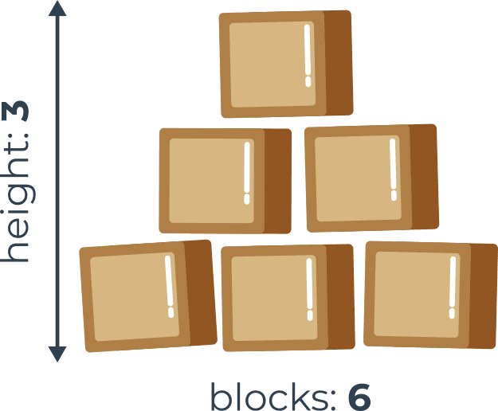

library(reticulate)
use_condaenv("datacamp-learning")
repl_python()exitWelcome to Module three! In the first section we will learn about conditional statements and how to use them to make decisions in Python.
A programmer writes a program and the program asks questions.
A computer executes the program and provides the answers. The program must be able to react according to the received answers.
Fortunately, computers know only two kinds of answers:
yes, this is true;
no, this is false.
You will never get a response like Let me think…., I don’t know, or Probably yes, but I don’t know for sure.
To ask questions, Python uses a set of very special operators. Let’s go through them one after another, illustrating their effects on some simple examples.
Question: are two values equal?
To ask this question, you use the == (equal equal) operator.
Don’t forget this important distinction:
= is an assignment operator, e.g., a = b assigns a with the value of b;
== is the question are these values equal? so a == b compares a and b.
It is a binary operator with left-sided binding. It needs two arguments and checks if they are equal.
Exercises
Now let’s ask a few questions. Try to guess the answers.
Question #1: What is the result of the following comparison?
True - of course, 2 is equal to 2. Python will answer True (remember this pair of predefined literals, True and False - they’re Python keywords, too).
Question #2: What is the result of the following comparison?
This question is not as easy as the first one. Luckily, Python is able to convert the integer value into its real equivalent, and consequently, the answer is True.
Question #3: What is the result of the following comparison?
This should be easy. The answer will be (or rather, always is) False.
==)The == (equal to) operator compares the values of two operands. If they are equal, the result of the comparison is True. If they are not equal, the result of the comparison is False.
Look at the equality comparison below – what is the result of this operation?
Note that we cannot find the answer if we do not know what value is currently stored in the variable var.
If the variable has been changed many times during the execution of your program, or its initial value is entered from the console, the answer to this question can be given only by Python and only at runtime.
Now imagine a programmer who suffers from insomnia, and has to count black and white sheep separately as long as there are exactly twice as many black sheep as white ones.
The question will be as follows:
Look at the equality comparison below:
!=)The != (not equal to) operator compares the values of two operands, too. Here is the difference: if they are equal, the result of the comparison is False. If they are not equal, the result of the comparison is True.
Now take a look at the inequality comparison below – can you guess the result of this operation?
You can also ask a comparison question using the > (greater than) operator.
If you want to know if there are more black sheep than white ones, you can write it as follows:
True confirms it; False denies it.
The greater than operator has another special, non-strict variant, but it’s denoted differently than in classical arithmetic notation: >= (greater than or equal to).
There are two subsequent signs, not one.
Both of these operators (strict and non-strict), as well as the two others discussed in the next section, are binary operators with left-sided binding, and their priority is greater than that shown by == and !=.
If we want to find out whether or not we have to wear a warm hat, we ask the following question:
As you’ve probably already guessed, the operators used in this case are: the < (less than) operator and its non-strict sibling: <= (less than or equal to).
Look at this simple example:
We’re going to check if there’s a risk of being fined by the highway police (the first question is strict, the second isn’t).
What can you do with the answer (i.e., the result of a comparison operation) you get from the computer?
There are at least two possibilities: first, you can memorize it (store it in a variable) and make use of it later. How do you do that? Well, you use an arbitrary variable like this:
The content of the variable will tell you the answer to the question asked.
The second possibility is more convenient and far more common: you can use the answer you get to make a decision about the future of the program.
You need a special instruction for this purpose, and we’ll discuss it very soon.
Now we need to update our priority table, and put all the new operators into it. It now looks as follows:
| Priority | Operator | |
|---|---|---|
| 1 | +, - |
unary |
| 2 | ** |
|
| 3 | *, /, //, % |
|
| 4 | +, - |
binary |
| 5 | <, <=, >, >= |
|
| 6 | ==. != |
You already know how to ask Python questions, but you still don’t know how to make reasonable use of the answers. You have to have a mechanism which will allow you to do something if a condition is met, and not do it if it isn’t.
It’s just like in real life: you do certain things or you don’t when a specific condition is met or not, e.g., you go for a walk if the weather is good, or stay home if it’s wet and cold.
To make such decisions, Python offers a special instruction. Due to its nature and its application, it’s called a conditional instruction (or conditional statement).
There are several variants of it. We’ll start with the simplest, increasing the difficulty slowly.
The first form of a conditional statement, which you can see below is written very informally but figuratively:
This conditional statement consists of the following, strictly necessary, elements in this and this order only:
the if keyword;
one or more white spaces;
an expression (a question or an answer) whose value will be interpreted solely in terms of True (when its value is non-zero) and False (when it is equal to zero);
a colon followed by a newline;
an indented instruction or set of instructions (at least one instruction is absolutely required); the indentation may be achieved in two ways – by inserting a particular number of spaces (the recommendation is to use four spaces of indentation), or by using the tab character; note: if there is more than one instruction in the indented part, the indentation should be the same in all lines; even though it may look the same if you use tabs mixed with spaces, it’s important to make all indentations exactly the same – Python 3 does not allow the mixing of spaces and tabs for indentation.
How does that statement work?
If the true_or_not expression represents the truth (i.e., its value is not equal to zero), the indented statement(s) will be executed;
if the true_or_not expression does not represent the truth (i.e., its value is equal to zero), the indented statement(s) will be omitted (ignored), and the next executed instruction will be the one after the original indentation level.
In real life, we often express a desire: if the weather is good,
we’ll go for a walk
then, we’ll have lunch
As you can see, having lunch is not a conditional activity and doesn’t depend on the weather.
Knowing what conditions influence our behavior, and assuming that we have the parameterless functions go_for_a_walk() and have_lunch(), we can write the following snippet:
if statementIf a certain sleepless Python developer falls asleep when he or she counts 120 sheep, and the sleep-inducing procedure may be implemented as a special function named sleep_and_dream(), the whole code takes the following shape:
You can read it as: if sheep_counter is greater than or equal to 120, then fall asleep and dream (i.e., execute the sleep_and_dream function.)
We’ve said that conditionally executed statements have to be indented. This creates a very legible structure, clearly demonstrating all possible execution paths in the code.
Take a look at the following code:
As you can see, making a bed, taking a shower and falling asleep and dreaming are all executed conditionally – when sheep_counter reaches the desired limit.
Feeding the sheepdogs, however, is always done (i.e., the feed_the_sheepdogs() function is not indented and does not belong to the if block, which means it is always executed.)
Now we’re going to discuss another variant of the conditional statement, which also allows you to perform an additional action when the condition is not met.
if-else statementWe started out with a simple phrase which read: If the weather is good, we will go for a walk.
Note: there is not a word about what will happen if the weather is bad. We only know that we won’t go outdoors, but what we could do instead is not known. We may want to plan something in case of bad weather, too.
We can say, for example: If the weather is good, we will go for a walk, otherwise we will go to a theater.
Now we know what we’ll do if the conditions are met, and we know what we’ll do if not everything goes our way. In other words, we have a “Plan B”.
Python allows us to express such alternative plans. This is done with a second, slightly more complex form of the conditional statement, the if-else statement:
Thus, there is a new word: else – this is a keyword.
The part of the code which begins with else says what to do if the condition specified for the if is not met (note the colon after the word).
The if-else execution goes as follows:
if the condition evaluates to True (its value is not equal to zero), the perform_if_condition_true statement is executed, and the conditional statement comes to an end;
if the condition evaluates to False (it is equal to zero), the perform_if_condition_false statement is executed, and the conditional statement comes to an end.
if-else statement: more conditional executionBy using this form of conditional statement, we can describe our plans as follows:
If the weather is good, we’ll go for a walk. Otherwise, we’ll go to a theater. No matter if the weather is good or bad, we’ll have lunch afterwards (after the walk or after going to the theater).
Everything we’ve said about indentation works in the same manner inside the else branch:
if-else statementsNow let’s discuss two special cases of the conditional statement.
First, consider the case where the instruction placed after the if is another if.
Read what we have planned for this Sunday. If the weather is fine, we’ll go for a walk. If we find a nice restaurant, we’ll have lunch there. Otherwise, we’ll eat a sandwich. If the weather is poor, we’ll go to the theater. If there are no tickets, we’ll go shopping in the nearest mall.
Let’s write the same in Python. Consider carefully the code here:
Here are two important points:
this use of the if statement is known as nesting; remember that every else refers to the if which lies at the same indentation level; you need to know this to determine how the ifs and elses pair up;
consider how the indentation improves readability, and makes the code easier to understand and trace.
elif statementThe second special case introduces another new Python keyword: elif. As you probably suspect, it’s a shorter form of else if.
elif is used to check more than just one condition, and to stop when the first statement which is true is found.
Our next example resembles nesting, but the similarities are very slight. Again, we’ll change our plans and express them as follows: If the weather is fine, we’ll go for a walk, otherwise if we get tickets, we’ll go to the theater, otherwise if there are free tables at the restaurant, we’ll go for lunch; if all else fails, we’ll stay home and play chess.
Have you noticed how many times we’ve used the word otherwise? This is the stage where the elif keyword plays its role.
Let’s write the same scenario using Python:
The way to assemble subsequent if-elif-else statements is sometimes called a cascade.
Notice again how the indentation improves the readability of the code.
Some additional attention has to be paid in this case:
you mustn’t use else without a preceding if;
else is always the last branch of the cascade, regardless of whether you’ve used elif or not;
else is an optional part of the cascade, and may be omitted;
if there is an else branch in the cascade, only one of all the branches is executed;
if there is no else branch, it’s possible that none of the available branches is executed.
This may sound a little puzzling, but hopefully some simple examples will help shed more light.
Now we’re going to show you some simple yet complete programs. We won’t explain them in detail, because we consider the comments (and the variable names) inside the code to be sufficient guides.
All the programs solve the same problem – they find the largest of several numbers and print it out.
Example 1:
We’ll start with the simplest case – how to identify the larger of two numbers:
The larger number is: 2The above snippet should be clear – it reads two integer values, compares them, and finds which is the larger.
Example 2:
Now we’re going to show you one intriguing fact. Python has an interesting feature – look at the code below:
The larger number is: 2Note: if any of the if-elif-else branches contains just one instruction, you may code it in a more comprehensive form (you don’t need to make an indented line after the keyword, but just continue the line after the colon).
This style, however, may be misleading, and we’re not going to use it in our future programs, but it’s definitely worth knowing if you want to read and understand someone else’s programs.
There are no other differences in the code.
Example 3:
It’s time to complicate the code – let’s find the largest of three numbers. Will it enlarge the code? A bit.
We assume that the first value is the largest. Then we verify this hypothesis with the two remaining values.
Look at the code below:
# Read three numbers
number1 = 1
number2 = 2
number3 = 3
# We temporarily assume that the first number
# is the largest one.
# We will verify this soon.
largest_number = number1
# We check if the second number is larger than the current largest_number
# and update the largest_number if needed.
if number2 > largest_number:
largest_number = number2
# We check if the third number is larger than the current largest_number
# and update the largest_number if needed.
if number3 > largest_number:
largest_number = number3
# Print the result
print("The largest number is:", largest_number)The largest number is: 3This method is significantly simpler than trying to find the largest number all at once, by comparing all possible pairs of numbers (i.e., first with second, second with third, third with first).
You should now be able to write a program which finds the largest of four, five, six, or even ten numbers.
You already know the scheme, so extending the size of the problem will not be particularly complex.
But what happens if we ask you to write a program that finds the largest of two hundred numbers? Can you imagine the code?
You’ll need two hundred variables. If two hundred variables isn’t bad enough, try to imagine searching for the largest of a million numbers.
Imagine a code that contains 199 conditional statements and two hundred invocations of the input() function. Luckily, you don’t need to deal with that. There’s a simpler approach.
We’ll ignore the requirements of Python syntax for now, and try to analyze the problem without thinking about the real programming. In other words, we’ll try to write the algorithm, and when we’re happy with it, we’ll implement it.
In this case, we’ll use a kind of notation which is not an actual programming language (it can be neither compiled nor executed), but it is formalized, concise and readable. It’s called pseudocode.
Let’s look at our pseudocode below:
What’s happening in it?
Firstly, we can simplify the program if, at the very beginning of the code, we assign the variable largest_number with a value which will be smaller than any of the entered numbers. We’ll use -999999999 for that purpose.
Secondly, we assume that our algorithm will not know in advance how many numbers will be delivered to the program. We expect that the user will enter as many numbers as she/he wants – the algorithm will work well with one hundred and with one thousand numbers. How do we do that?
We make a deal with the user: when the value -1 is entered, it will be a sign that there are no more data and the program should end its work.
Otherwise, if the entered value is not equal to -1, the program will read another number, and so on.
The trick is based on the assumption that any part of the code can be performed more than once – precisely, as many times as needed.
Performing a certain part of the code more than once is called a loop. The meaning of this term is probably obvious to you.
Lines 02 through 08 make a loop. We’ll pass through them as many times as needed to review all the entered values.
Can you use a similar structure in a program written in Python? Yes, you can.
Extra Info
Python often comes with a lot of built-in functions that will do the work for you. For example, to find the largest number of all, you can use a Python built-in function called max(). You can use it with multiple arguments. Analyze the code below:
The largest number is: 3By the same fashion, you can use the min() function to return the lowest number.
We’re going to talk about these (and many other) functions soon. For the time being, our focus will be on conditional execution and loops to let you gain more confidence in programming and teach you the skills that will let you fully understand and apply the two concepts in your code. So, for now, we’re not taking any shortcuts.
The comparison (otherwise known as relational) operators are used to compare values.
When you want to execute some code only if a certain condition is met, you can use a conditional statement.
A single if statement, e.g.:
x is equal to 10A series of if statements, e.g.:
x is greater than 5
x is equal to 10Each if statement is tested separately.
An if-else statement, e.g.:
x is greater than or equal to 10The if-elif-else statement, e.g.:
x == 10
x > 5If the condition for if is False, the program checks the conditions of the subsequent elif blocks - the first elif block that is True is executed. If all the conditions are False, the else block will be executed.
Nested conditional statements, e.g.:
In the second section you will learn about loops in Python, and specifically – the while and for loops. You will learn how to create (and avoid falling into) infinite loops, how to exit loops, and skip particular loop iterations.
whileDo you agree with the statement presented below?
while there is something to do
do it Note that this record also declares that if there is nothing to do, nothing at all will happen.
In general, in Python, a loop can be represented as follows:
If you notice some similarities to the if instruction, that’s quite all right. Indeed, the syntactic difference is only one: you use the word while instead of the word if.
The semantic difference is more important: when the condition is met, if performs its statements only once; while repeats the execution as long as the condition evaluates to True.
Note: all the rules regarding indentation are applicable here, too. We’ll show you this soon.
Look at the algorithm below:
It is now important to remember that:
if you want to execute more than one statement inside one while loop, you must (as with if) indent all the instructions in the same way;
an instruction or set of instructions executed inside the while loop is called the loop’s body;
if the condition is False (equal to zero) as early as when it is tested for the first time, the body is not executed even once (note the analogy of not having to do anything if there is nothing to do);
the body should be able to change the condition’s value, because if the condition is True at the beginning, the body might run continuously to infinity – notice that doing a thing usually decreases the number of things to do).
An infinite loop, also called an endless loop, is a sequence of instructions in a program which repeat indefinitely (loop endlessly.)
Here’s an example of a loop that is not able to finish its execution:
This loop will infinitely print "I'm stuck inside a loop." on the screen.
If you want to get the best learning experience from seeing how an infinite loop behaves, launch IDLE, create a New File, copy-paste the above code, save your file, and run the program. What you will see is the never-ending sequence of "I'm stuck inside a loop." strings printed to the Python console window. To terminate your program, just press Ctrl-C (or Ctrl-Break on some computers). This will cause a KeyboardInterrupt exception and let your program get out of the loop. We’ll talk about it later in the course.
Let’s go back to the sketch of the algorithm we showed you recently. We’re going to show you how to use this newly learned loop to find the largest number from a large set of entered data.
Analyze the program carefully. See where the loop starts (line 8). Locate the loop’s body and find out how the body is exited:
# Store the current largest number here.
largest_number = -999999999
# Input the first value.
number = int(input("Enter a number or type -1 to stop: "))
# If the number is not equal to -1, continue.
while number != -1:
# Is number larger than largest_number?
if number > largest_number:
# Yes, update largest_number.
largest_number = number
# Input the next number.
number = int(input("Enter a number or type -1 to stop: "))
# Print the largest number.
print("The largest number is:", largest_number)Check how this code implements the algorithm we showed you earlier.
while loop: more examplesLet’s look at another example employing the while loop. Follow the comments to find out the idea and the solution.
# A program that reads a sequence of numbers
# and counts how many numbers are even and how many are odd.
# The program terminates when zero is entered.
odd_numbers = 0
even_numbers = 0
# Read the first number.
number = int(input("Enter a number or type 0 to stop: "))
# 0 terminates execution.
while number != 0:
# Check if the number is odd.
if number % 2 == 1:
# Increase the odd_numbers counter.
odd_numbers += 1
else:
# Increase the even_numbers counter.
even_numbers += 1
# Read the next number.
number = int(input("Enter a number or type 0 to stop: "))
# Print results.
print("Odd numbers count:", odd_numbers)
print("Even numbers count:", even_numbers)Certain expressions can be simplified without changing the program’s behavior.
Try to recall how Python interprets the truth of a condition, and note that these two forms are equivalent:
while number != 0: and while number:.
The condition that checks if a number is odd can be coded in these equivalent forms, too:
if number % 2 == 1: and if number % 2:.
counter variable to exit a loopLook at the snippet below:
Inside the loop. 5
Inside the loop. 4
Inside the loop. 3
Inside the loop. 2
Inside the loop. 1
Outside the loop. 0This code is intended to print the string "Inside the loop." and the value stored in the counter variable during a given loop exactly five times. Once the condition has not been met (the counter variable has reached 0), the loop is exited, and the message "Outside the loop." as well as the value stored in counter is printed.
But there’s one thing that can be written more compactly – the condition of the while loop.
Can you see the difference?
Inside the loop. 5
Inside the loop. 4
Inside the loop. 3
Inside the loop. 2
Inside the loop. 1
Outside the loop. 0Is it more compact than previously? A bit. Is it more legible? That’s disputable.
Don’t feel obliged to code your programs in a way that is always the shortest and the most compact. Readability may be a more important factor. Keep your code ready for a new programmer.
forAnother kind of loop available in Python comes from the observation that sometimes it’s more important to count the “turns” of the loop than to check the conditions.
Imagine that a loop’s body needs to be executed exactly one hundred times. If you would like to use the while loop to do it, it may look like this:
It would be nice if somebody could do this boring counting for you. Is that possible?
Of course it is – there’s a special loop for these kinds of tasks, and it is named for.
Actually, the for loop is designed to do more complicated tasks – it can “browse” large collections of data item by item. We’ll show you how to do that soon, but right now we’re going to present a simpler variant of its application.
Take a look at the snippet:
There are some new elements. Let us tell you about them:
the for keyword opens the for loop; note – there’s no condition after it; you don’t have to think about conditions, as they’re checked internally, without any intervention;
any variable after the for keyword is the control variable of the loop; it counts the loop’s turns, and does it automatically;
the in keyword introduces a syntax element describing the range of possible values being assigned to the control variable;
the range() function (this is a very special function) is responsible for generating all the desired values of the control variable; in our example, the function will create (we can even say that it will feed the loop with) subsequent values from the following set: 0, 1, 2 .. 97, 98, 99; note: in this case, the range() function starts its job from 0 and finishes it one step (one integer number) before the value of its argument;
note the pass keyword inside the loop body – it does nothing at all; it’s an empty instruction – we put it here because the for loop’s syntax demands at least one instruction inside the body (by the way – if, elif, else and while express the same thing)
Our next examples will be a bit more modest in the number of loop repetitions.
Take a look at the snippet below.
The value of i is currently 0
The value of i is currently 1
The value of i is currently 2
The value of i is currently 3
The value of i is currently 4
The value of i is currently 5
The value of i is currently 6
The value of i is currently 7
The value of i is currently 8
The value of i is currently 9Note:
the loop has been executed ten times (it’s the range() function’s argument)
the last control variable’s value is 9 (not 10, as it starts from 0, not from 1)
The range() function invocation may be equipped with two arguments, not just one:
The value of i is currently 2
The value of i is currently 3
The value of i is currently 4
The value of i is currently 5
The value of i is currently 6
The value of i is currently 7In this case, the first argument determines the initial (first) value of the control variable.
The last argument shows the first value the control variable will not be assigned.
Note: the range() function accepts only integers as its arguments, and generates sequences of integers.
The first value shown is 2 (taken from the range()’s first argument.)
The last is 7 (although the range()’s second argument is 8).
for loop and the range() function with three argumentsThe range() function may also accept three arguments – take a look at the code in the editor.
The value of i is currently 2
The value of i is currently 5The third argument is an increment – it’s a value added to control the variable at every loop turn (as you may suspect, the default value of the increment is 1).
The first argument passed to the range() function tells us what the starting number of the sequence is (hence 2 in the output). The second argument tells the function where to stop the sequence (the function generates numbers up to the number indicated by the second argument, but does not include it). Finally, the third argument indicates the step, which actually means the difference between each number in the sequence of numbers generated by the function.
2 (starting number) → 5 (2 increment by 3 equals 5 – the number is within the range from 2 to 8) → 8 (5 increment by 3 equals 8 – the number is not within the range from 2 to 8, because the stop parameter is not included in the sequence of numbers generated by the function.)
Note: if the set generated by the range() function is empty, the loop won’t execute its body at all.
Just like here – there will be no output:
Note: the set generated by the range() has to be sorted in ascending order. There’s no way to force the range() to create a set in a different form when the range() function accepts exactly two arguments. This means that the range()’s second argument must be greater than the first.
Thus, there will be no output here, either:
Let’s have a look at a short program whose task is to write some of the first powers of two:
2 to the power of 0 is 1
2 to the power of 1 is 2
2 to the power of 2 is 4
2 to the power of 3 is 8
2 to the power of 4 is 16
2 to the power of 5 is 32
2 to the power of 6 is 64
2 to the power of 7 is 128
2 to the power of 8 is 256
2 to the power of 9 is 512
2 to the power of 10 is 1024
2 to the power of 11 is 2048
2 to the power of 12 is 4096
2 to the power of 13 is 8192
2 to the power of 14 is 16384
2 to the power of 15 is 32768The expo variable is used as a control variable for the loop, and indicates the current value of the exponent. The exponentiation itself is replaced by multiplying by two. Since \(2^0\) is equal to \(1\), then \(2 \times 1\) is equal to \(2^1\), \(2\times 2^1\) is equal to \(2^2\), and so on.
for loop – counting mississippilyScenario
Do you know what Mississippi is? Well, it’s the name of one of the states and rivers in the United States. The Mississippi River is about 2,340 miles long, which makes it the second longest river in the United States (the longest being the Missouri River). It’s so long that a single drop of water needs 90 days to travel its entire length!
The word Mississippi is also used for a slightly different purpose: to count mississippily.
If you’re not familiar with the phrase, we’re here to explain to you what it means: it’s used to count seconds.
The idea behind it is that adding the word Mississippi to a number when counting seconds aloud makes them sound closer to clock-time, and therefore “one Mississippi, two Mississippi, three Mississippi” will take approximately an actual three seconds of time! It’s often used by children playing hide-and-seek to make sure the seeker does an honest count.
Your task is very simple here: write a program that uses a for loop to “count mississippily” to five. Having counted to five, the program should print to the screen the final message "Ready or not, here I come!"
Use the skeleton we’ve provided in the editor.
The code in the editor contains two elements which may not be fully clear to you at this moment: the import time statement, and the sleep() method. We’re going to talk about them soon.
For the time being, we’d just like you to know that we’ve imported the time module and used the sleep() method to suspend the execution of each subsequent print() function inside the for loop for one second, so that the message outputted to the console resembles an actual counting. Don’t worry - you’ll soon learn more about modules and methods.
Solution:
break and continue statementsSo far, we’ve treated the body of the loop as an indivisible and inseparable sequence of instructions that are performed completely at every turn of the loop. However, as a developer, you could be faced with the following choices:
it appears that it’s unnecessary to continue the loop as a whole; you should refrain from further execution of the loop’s body and go further;
it appears that you need to start the next turn of the loop without completing the execution of the current turn.
Python provides two special instructions for the implementation of both these tasks. Let’s say for the sake of accuracy that their existence in the language is not necessary – an experienced programmer is able to code any algorithm without these instructions. Such additions, which don’t improve the language’s expressive power, but only simplify the developer’s work, are sometimes called syntactic candy, or syntactic sugar.
These two instructions are:
break – exits the loop immediately, and unconditionally ends the loop’s operation; the program begins to execute the nearest instruction after the loop’s body;
continue – behaves as if the program has suddenly reached the end of the body; the next turn is started and the condition expression is tested immediately.
Both these words are keywords.
Now we’ll show you two simple examples to illustrate how the two instructions work. Look at the code in the editor. Run the program and analyze the output.
break example:
Inside the loop. 1
Inside the loop. 2
Outside the loop.continue example:
Inside the loop. 1
Inside the loop. 2
Inside the loop. 4
Inside the loop. 5
Outside the loop.The break and continue statements: more examples
Let’s return to our program that recognizes the largest among the entered numbers. We’ll convert it twice, using the break and continue instructions.
Analyze the code, and judge whether and how you would use either of them.
The break variant goes here:
largest_number = -99999999
counter = 0
while True:
number = int(input("Enter a number or type -1 to end the program: "))
if number == -1:
break
counter += 1
if number > largest_number:
largest_number = number
if counter != 0:
print("The largest number is", largest_number)
else:
print("You haven't entered any number.")And now the continue variant:
largest_number = -99999999
counter = 0
number = int(input("Enter a number or type -1 to end program: "))
while number != -1:
if number == -1:
continue
counter += 1
if number > largest_number:
largest_number = number
number = int(input("Enter a number or type -1 to end the program: "))
if counter:
print("The largest number is", largest_number)
else:
print("You haven't entered any number.")Look carefully, the user enters the first number before the program enters the while loop. The subsequent number is entered when the program is already in the loop.
break statement - Stuck in a loopScenario
The break statement is used to exit/terminate a loop.
Design a program that uses a while loop and continuously asks the user to enter a word unless the user enters "chupacabra" as the secret exit word, in which case the message "You've successfully left the loop." should be printed to the screen, and the loop should terminate.
Don’t print any of the words entered by the user. Use the concept of conditional execution and the break statement.
continue statement: the Ugly Vowel EaterScenario
The continue statement is used to skip the current block and move ahead to the next iteration, without executing the statements inside the loop.
It can be used with both the while and for loops.
Your task here is very special: you must design a vowel eater! Write a program that uses:
a for loop;
the concept of conditional execution (if-elif-else)
the continue statement.
Your program must:
ask the user to enter a word;
use user_word = user_word.upper() to convert the word entered by the user to upper case; we’ll talk about string methods and the upper() method very soon – don’t worry;
use conditional execution and the continue statement to “eat” the following vowels A, E, I, O, U from the inputted word;
print the uneaten letters to the screen, each one of them on a separate line.
continue statement - The Pretty Vowel EaterScenario
Your task here is even more special than before: you must redesign the (ugly) vowel eater from the previous lab and create a better, upgraded (pretty) vowel eater! Write a program that uses:
a for loop;
the concept of conditional execution (if-elif-else)
the continue statement.
Your program must:
ask the user to enter a word;
use user_word = user_word.upper() to convert the word entered by the user to upper case.
use conditional execution and the continue statement to “eat” the following vowels A, E, I, O, U from the inputted word;
assign the uneaten letters to the word_without_vowels variable and print the variable to the screen.
Look at the code in the editor. We’ve created word_without_vowels and assigned an empty string to it. Use concatenation operation to ask Python to combine selected letters into a longer string during subsequent loop turns, and assign it to the word_without_vowels variable.
word_without_vowels = ""
# Enter a word
user_word = "Gregory"
user_word = user_word.upper()
for letter in user_word:
if letter == "A":
continue
elif letter == "E":
continue
elif letter == "I":
continue
elif letter == "O":
continue
elif letter == "U":
continue
else:
word_without_vowels += letter
print(word_without_vowels)GRGRYwhile loop and the else branchBoth loops, while and for, have one interesting (and rarely used) feature.
We’ll show you how it works – try to judge for yourself if it’s usable and whether you can live without it or not.
In other words, try to convince yourself if the feature is valuable and useful, or is just syntactic sugar.
Take a look at the snippet in the editor. There’s something strange at the end – the else keyword.
As you may have suspected, loops may have the else branch too, like ifs.
The loop’s else branch is always executed once, regardless of whether the loop has entered its body or not.
Modify the snippet a bit so that the loop has no chance to execute its body even once:
The while’s condition is False at the beginning – can you see it?
for loop and the else branchfor loops behave a bit differently – take a look at the snippet:
The output may be a bit surprising. The i variable retains its last value.
Modify the code a bit to carry out one more experiment.
The loop’s body won’t be executed here at all. Note: we’ve assigned the i variable before the loop.
When the loop’s body isn’t executed, the control variable retains the value it had before the loop.
Note: if the control variable doesn’t exist before the loop starts, it won’t exist when the execution reaches the else branch.
How do you feel about this variant of else?
Soon we’ll tell you about some other kinds of variables. Our current variables can only store one value at a time, but there are variables that can do much more – they can store as many values as you want. But let’s do some labs, first.
while loopScenario
Listen to this story: a boy and his father, a computer programmer, are playing with wooden blocks. They are building a pyramid.
Their pyramid is a bit weird, as it is actually a pyramid-shaped wall – it’s flat. The pyramid is stacked according to one simple principle: each lower layer contains one block more than the layer above.
The figure illustrates the rule used by the builders:

Your task is to write a program which reads the number of blocks the builders have, and outputs the height of the pyramid that can be built using these blocks.
Note: the height is measured by the number of fully completed layers – if the builders don’t have a sufficient number of blocks and cannot complete the next layer, they finish their work immediately.
Test your code using the data we’ve provided.
| Sample input | Expected output |
|---|---|
6 |
3 |
20 |
5 |
1000 |
44 |
2 |
1 |
blocks = 6
# Current height is 0
height = 0
while blocks > height: # As long as there are enought blocks to build another layer
# Since there are enough blocks, the height increases by 1
height += 1
# Each value of the height is equal to the blocks used to build the layer at that height
# To build the first layer 1 block is needed. To build layer 2, 2 blocks are needed and so on
# So with each iteration, 'height' blocks are expended
blocks -= height
print("The height of the pyramid:", height)The height of the pyramid: 3The height of the pyramid: 5The height of the pyramid: 44Scenario
In 1937, a German mathematician named Lothar Collatz formulated an intriguing hypothesis (it still remains unproven) which can be described in the following way:
take any non-negative and non-zero integer number and name it c0;
if it’s even, evaluate a new c0 as c0 ÷ 2;
otherwise, if it’s odd, evaluate a new c0 as 3 × c0 + 1;
if c0 ≠ 1, go back to point 2.
The hypothesis says that regardless of the initial value of c0, it will always go to 1.
Of course, it’s an extremely complex task to use a computer in order to prove the hypothesis for any natural number (it may even require artificial intelligence), but you can use Python to check some individual numbers. Maybe you’ll even find the one which would disprove the hypothesis.
Write a program which reads one natural number and executes the above steps as long as c0 remains different from 1. We also want you to count the steps needed to achieve the goal. Your code should output all the intermediate values of c0, too.
Hint: the most important part of the problem is how to transform Collatz’s idea into a while loop – this is the key to success.
Test your code using the data we’ve provided.
| Sample input | Expected output |
|---|---|
| 15 | 46 46 70 35 106 53 160 80 40 20 10 5 16 8 4 2 1 steps = 17 |
| 16 | 8 4 2 1 steps = 4 |
| 1023 | 3070 1535 4606 2303 6910 3455 10366 5183 15550 7775 23326 11663 34990 17495 52486 26243 78730 39365 118096 59048 29524 14762 7381 22144 11072 5536 2768 1384 692 346 173 173 260 130 65 196 98 49 148 74 37 37 56 28 14 7 22 11 34 17 52 26 13 40 20 10 5 16 8 4 2 steps = 62 |
46
23
70
35
106
53
160
80
40
20
10
5
16
8
4
2
1
steps = 178
4
2
1
steps = 43070
1535
4606
2303
6910
3455
10366
5183
15550
7775
23326
11663
34990
17495
52486
26243
78730
39365
118096
59048
29524
14762
7381
22144
11072
5536
2768
1384
692
346
173
520
260
130
65
196
98
49
148
74
37
112
56
28
14
7
22
11
34
17
52
26
13
40
20
10
5
16
8
4
2
1
steps = 62while and for:
while loop executes a statement or a set of statements as long as a specified boolean condition is true.for loop executes a set of statements many times; it’s used to iterate over a sequence (e.g., a list, a dictionary, a tuple, or a set – you will learn about them soon) or other iterable objects (e.g., strings). You can use the for loop to iterate over a sequence of numbers using the built-in range() function.break and continue statements to change the flow of a loop:
break to exit a loop.continue to skip the current iteration, and continue with the next iteration.while and for loops can also have an else clause in Python. The else clause executes after the loop finishes its execution as long as it has not been terminated by break.range() function generates a sequence of numbers. It accepts integers and returns range objects. The syntax of range() looks as follows: range(start, stop, step), where:
start is an optional parameter specifying the starting number of the sequence (0 by default)stop is an optional parameter specifying the end of the sequence generated (it is not included),step is an optional parameter specifying the difference between the numbers in the sequence (1 by default.)Question 1: Create a for loop that counts from 0 to 10, and prints odd numbers to the screen. Use the skeleton below:
Solution:
Question 2: Create a while loop that counts from 0 to 10, and prints odd numbers to the screen. Use the skeleton below:
Solution:
Question 3: Create a program with a for loop and a break statement. The program should iterate over characters in an email address, exit the loop when it reaches the @ symbol, and print the part before @ on one line. Use the skeleton below:
Solution:
john.smithQuestion 4: Create a program with a for loop and a continue statement. The program should iterate over a string of digits, replace each 0 with x, and print the modified string to the screen.
In this section, you will learn about logical and bitwise operators in Python, and such concepts as the truth table and bit shifting.
Have you noticed that the conditions we’ve used so far have been very simple, not to say, quite primitive? The conditions we use in real life are much more complex. Let’s look at this sentence:
If we have some free time, and the weather is good, we will go for a walk.
We’ve used the conjunction and, which means that going for a walk depends on the simultaneous fulfilment of these two conditions. In the language of logic, such a connection of conditions is called a conjunction. And now another example:
If you are in the mall or I am in the mall, one of us will buy a gift for Mom.
The appearance of the word or means that the purchase depends on at least one of these conditions. In logic, such a compound is called a disjunction.
It’s clear that Python must have operators to build conjunctions and disjunctions. Without them, the expressive power of the language would be substantially weakened. They’re called logical operators.
and operatorOne logical conjunction operator in Python is the word and. It’s a binary operator with a priority that is lower than the one expressed by the comparison operators. It allows us to code complex conditions without the use of parentheses like this one:
The result provided by the and operator can be determined on the basis of the truth table.
If we consider the conjunction of A and B, the set of possible values of arguments and corresponding values of the conjunction looks as follows:
Argument A |
Argument B |
A and B |
|---|---|---|
False |
False |
False |
False |
True |
False |
True |
False |
False |
True |
True |
True |
or operatorA disjunction operator is the word or. It’s a binary operator with a lower priority than and (just like + compared to *). Its truth table is as follows:
Argument A |
Argument B |
A or B |
|---|---|---|
False |
False |
False |
False |
True |
True |
True |
False |
True |
True |
True |
True |
not operatorIn addition, there’s another operator that can be applied to the construction of conditions. It’s a unary operator performing a logical negation. Its operation is simple: it turns truth into falsehood and falsehood into truth.
This operator is written as the word not, and its priority is very high: the same as the unary + and -. Its truth table is simple:
| Argument | not Argument |
|---|---|
False |
True |
True |
False |
Let’s create a variable named var and assign 1 to it. The following conditions are pairwise equivalent:
You may be familiar with De Morgan’s laws. They say that:
The negation of a conjunction is the disjunction of the negations.
The negation of a disjunction is the conjunction of the negations.
Let’s write the same thing using Python:
Note how the parentheses have been used to code the expressions ‒ we put them there to improve readability.
We should add that none of these two-argument operators can be used in the abbreviated form known as op=. This exception is worth remembering.
Logical operators take their arguments as a whole regardless of how many bits they contain. The operators are aware only of the value: zero (when all the bits are reset) means False; not zero (when at least one bit is set) means True.
The result of their operations is one of these values: False or True. This means that this snippet will assign the value True to the j variable if i is not zero; otherwise, it will be False.
However, there are four operators that allow you to manipulate single bits of data. They are called bitwise operators.
They cover all the operations we mentioned before in the logical context, and one additional operator. This is the xor (as in exclusive or) operator, and is denoted as ^ (caret).
Here are all of them:
& (ampersand) ‒ bitwise conjunction;
| (bar) ‒ bitwise disjunction;
~ (tilde) ‒ bitwise negation;
^ (caret) ‒ bitwise exclusive or (xor).
Bitwise operations (&, |, and ^):
Argument A |
Argument B |
A & B |
A | B |
A ^ B |
|---|---|---|---|---|
0 |
0 |
0 |
0 |
0 |
0 |
1 |
0 |
1 |
1 |
1 |
0 |
0 |
1 |
1 |
1 |
1 |
1 |
1 |
0 |
Bitwise operations (~):
| Argument | ~ Argument |
|---|---|
0 |
1 |
1 |
0 |
Let’s make it easier:
& requires exactly two 1s to provide 1 as the result;
| requires at least one 1 to provide 1 as the result;
^ requires exactly one 1 to provide 1 as the result.
Let us add an important remark: the arguments of these operators must be integers; we must not use floats here.
The difference in the operation of the logical and bit operators is important: the logical operators do not penetrate into the bit level of its argument. They’re only interested in the final integer value.
Bitwise operators are stricter: they deal with every bit separately. If we assume that the integer variable occupies 64 bits (which is common in modern computer systems), you can imagine the bitwise operation as a 64-fold evaluation of the logical operator for each pair of bits of the arguments. This analogy is obviously imperfect, as in the real world all these 64 operations are performed at the same time (simultaneously).
We’ll now show you an example of the difference in operation between the logic and bit operations. Let’s assume that the following assignments have been performed:
If we assume that the integers are stored with 32 bits, the bitwise image of the two variables will be as follows:
i: 00000000000000000000000000001111
j: 00000000000000000000000000010110The assignment is given:
We are dealing with a logical conjunction here. Let’s trace the course of the calculations. Both variables i and j are not zeros, so will be deemed to represent True. Consulting the truth table for the and operator, we can see that the result will be True. No other operations are performed.
log: TrueNow the bitwise operation ‒ here it is:
The & operator will operate with each pair of corresponding bits separately, producing the values of the relevant bits of the result. Therefore, the result will be as follows:
i |
00000000000000000000000000001111 |
j |
00000000000000000000000000010110 |
bit = i & j |
00000000000000000000000000000110 |
These bits correspond to the integer value of six.
Let’s look at the negation operators now. First the logical one:
The logneg variable will be set to False ‒ nothing more needs to be done.
The bitwise negation goes like this:
It may be a bit surprising: the bitneg variable value is -16. This may seem strange, but isn’t at all. If you wish to learn more, you should check out the binary numeral system and the rules governing two’s complement numbers.
i |
00000000000000000000000000001111 |
bitneg = ~i |
11111111111111111111111111110000 |
Each of these two-argument operators can be used in abbreviated form. These are the examples of their equivalent notations:
x = x & y |
x &= y |
x = x | y |
x |= y |
x = x ^ y |
x ^= y |
We’ll now show you what you can use bitwise operators for. Imagine that you’re a developer obliged to write an important piece of an operating system. You’ve been told that you’re allowed to use a variable assigned in the following way:
The variable stores the information about various aspects of system operation. Each bit of the variable stores one yes/no value. You’ve also been told that only one of these bits is yours ‒ the third (remember that bits are numbered from zero, and bit number zero is the lowest one, while the highest is number 31). The remaining bits are not allowed to change, because they’re intended to store other data. Here’s your bit marked with the letter x:
You may be faced with the following tasks:
1. Check the state of your bit ‒ you want to find out the value of your bit; comparing the whole variable to zero will not do anything, because the remaining bits can have completely unpredictable values, but you can use the following conjunction property:
If you apply the & operation to the flag_register variable along with the following bit image:
(note the 1 at your bit’s position) as the result, you obtain one of the following bit strings:
00000000000000000000000000001000 if your bit was set to 1.
00000000000000000000000000000000 if your bit was reset to 0.
Such a sequence of zeros and ones, whose task is to grab the value or to change the selected bits, is called a bit mask.
Let’s build a bit mask to detect the state of your bit. It should point to the third bit. That bit has the weight of \(2^3 = 8\). A suitable mask could be created by the following declaration:
You can also make a sequence of instructions depending on the state of your bit. Here it is:
2. Reset your bit ‒ you assign a zero to the bit while all the other bits must remain unchanged; let’s use the same property of the conjunction as before, but let’s use a slightly different mask ‒ exactly as below:
Note that the mask was created as a result of the negation of all the bits of the_mask variable. Resetting the bit is simple, and looks like this (choose the one you like more):
3. Set your bit ‒ you assign a 1 to your bit, while all the remaining bits must remain unchanged; use the following disjunction property:
You’re now ready to set your bit with one of the following instructions:
4. Negate your bit ‒ you replace a 1 with a 0 and a 0 with a 1. You can use an interesting property of the xor operator:
and negate your bit with the following instructions:
Python offers yet another operation relating to single bits: shifting. This is applied only to integer values, and you mustn’t use floats as arguments for it.
You already apply this operation very often and quite unconsciously. How do you multiply any number by ten? Take a look:
\[ 12345 \times 10 = 123450 \]
As you can see, multiplying by ten is in fact a shift of all the digits to the left and filling the resulting gap with zero.
Division by ten? Take a look:
\[ 12340 \div 10 = 1234 \]
Dividing by ten is nothing but shifting the digits to the right.
The same kind of operation is performed by the computer, but with one difference: as two is the base for binary numbers (not 10), shifting a value one bit to the left thus corresponds to multiplying it by two; respectively, shifting one bit to the right is like dividing by two (notice that the rightmost bit is lost).
The shift operators in Python are a pair of digraphs: << and >>, clearly suggesting in which direction the shift will act.
The left argument of these operators is an integer value whose bits are shifted. The right argument determines the size of the shift.
It shows that this operation is certainly not commutative.
The priority of these operators is very high. You’ll see them in the updated table of priorities, which we’ll show you at the end of this section.
Take a look at the shifts in the editor window.
Note:
17 >> 1 → 17 // 2 (17 floor-divided by 2 to the power of 1) → 8 (shifting to the right by one bit is the same as integer division by two)
17 << 2 → 17 * 4 (17 multiplied by 2 to the power of 2) → 68 (shifting to the left by two bits is the same as integer multiplication by four)
And here is the updated priority table, containing all the operators introduced so far:
| Priority | Operator | |
|---|---|---|
| 1 | ~, +, - |
unary |
| 2 | ** |
|
| 3 | *. /, //, % |
|
| 4 | +, - |
binary |
| 5 | <<, >> |
|
| 6 | <, <=, >, >= |
|
| 7 | ==, != |
|
| 8 | & |
|
| 9 | | |
|
| 10 | =, +=, -=, *=, /=, %=. &=, ^=, |=, >>=, <<= |
1. Python supports the following logical operators:
and → if both operands are true, the condition is true, e.g., (True and True) is True,
or → if any of the operands are true, the condition is true, e.g., (True or False) is True,
not → returns false if the result is true, and returns true if the result is false, e.g., not True is False.
2. You can use bitwise operators to manipulate single bits of data. The following sample data:
x = 15, which is 0000 1111 in binary,
y = 16, which is 0001 0000 in binary.
will be used to illustrate the meaning of bitwise operators in Python. Analyze the examples below:
& does a bitwise and, e.g., x & y = 0, which is 0000 0000 in binary,
| does a bitwise or, e.g., x | y = 31, which is 0001 1111 in binary,
~ does a bitwise not, e.g., ~x = 240*, which is 1111 0000 in binary,
^ does a bitwise xor, e.g., x ^ y = 31, which is 0001 1111 in binary,
>> does a bitwise right shift, e.g., y >> 1 = 8, which is 0000 1000 in binary,
<< does a bitwise left shift, e.g., y << 3 = 128, which is 1000 0000 in binary.
* -16 (decimal from signed 2’s complement) – read more about the Two’s complement operation.